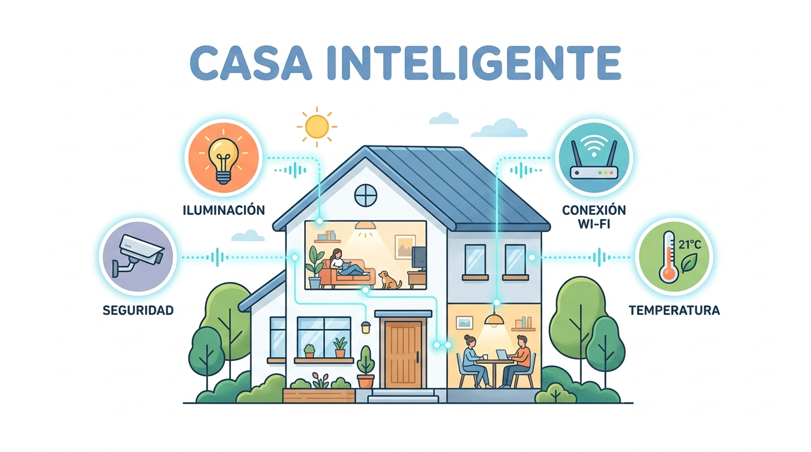
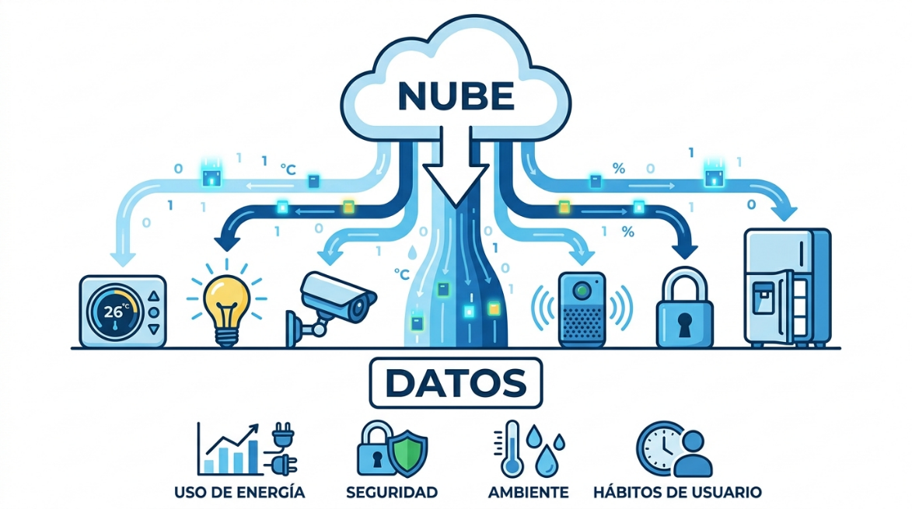
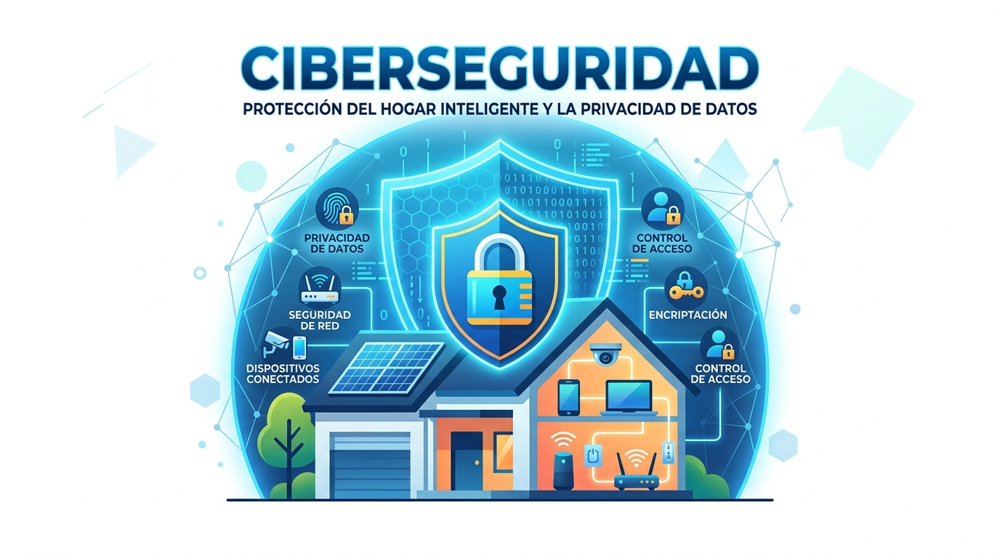

¿Qué es la Domótica?
La vivienda que aprende y responde.
Conjunto de tecnologías aplicadas al control y la automatización inteligente de una vivienda. Para nosotros como futuros desarrolladores, un hogar inteligente es una red de nodos de hardware coordinados por software, donde el verdadero motor es el flujo de la información.

Interactuar verbalmente con el entorno para regular dispositivos o permitir que el sistema climatice los ambientes de forma predictiva según nuestra proximidad física.
¿Qué datos se generan en una vivienda?
Un hogar conectado produce telemetría continua a través de dos actores generadores:

¿Cómo viajan los datos?
Wi-Fi vs Zigbee y Z-Wave en Malla
La transmisión es predominantemente inalámbrica, requiriendo diferenciar la topología de red según el consumo y la confiabilidad:
Conexión directa al router. Alto ancho de banda, pero alto consumo energético y riesgo de congestión en la tabla de IPs.
Topología mesh auto-reparable. Ultra bajo consumo (años con pila botón); cada nodo alimentado repite la señal.
Traduce los paquetes de radiofrecuencia de bajo consumo hacia protocolos IP estándar, permitiendo la comunicación fluida con el router y el posterior enlace a Internet.
¿Dónde reside la información?
Hub Local (Edge) vs Nube (Big Data)
La administración inicial opera en el concentrador hogareño, pero a nivel macro la información se centraliza en servidores masivos de empresas proveedoras (Google, Amazon, Apple, plataformas IoT).
Riesgos en el hogar inteligente
Al digitalizar el entorno íntimo emergen dos frentes de riesgo que demandan rigurosidad técnica:

Credenciales por defecto, puertos expuestos o firmware desactualizado permiten tomar control de cámaras de seguridad, vulnerar cerraduras inteligentes o reclutar dispositivos hogareños en redes zombi (botnets).
El registro detallado de horarios, presencia y rutinas construye una radiografía de nuestra privacidad. Una filtración en los servidores del fabricante expone la vida íntima del hogar a terceros.
Relación con la Materia y Rol del Desarrollador
- Input (Entrada): Captura sensorial y comandos del usuario en el entorno físico.
- Canal y Nodo Central: Transporte inalámbrico local hacia el concentrador.
- Big Data en la Nube: Procesamiento analítico masivo y sincronización remota.
- Flujo Bidireccional Constante: Telemetría de subida y telemando de bajada hacia los actuadores.
- Criptografía en Tránsito: Protocolos seguros (TLS/AES) que garantizan confidencialidad e integridad.
La domótica representa un salto en accesibilidad universal y confort. Como desarrolladores de software, nuestro compromiso ético es claro: la privacidad y la seguridad no pueden ser un parche tardío, sino la base estructural desde la cual se diseña cualquier sistema tecnológico.